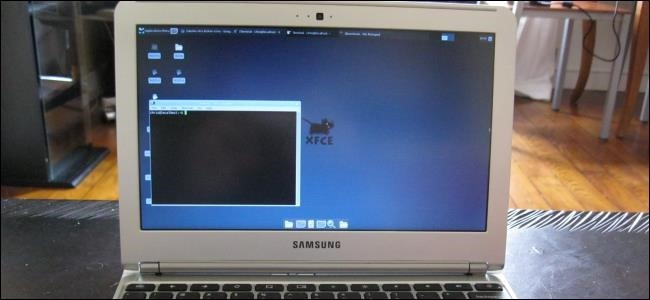
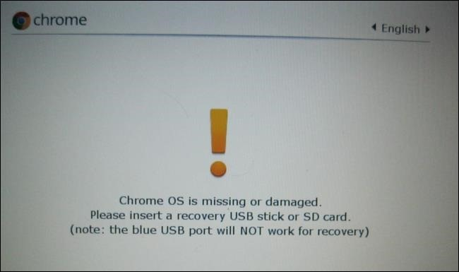
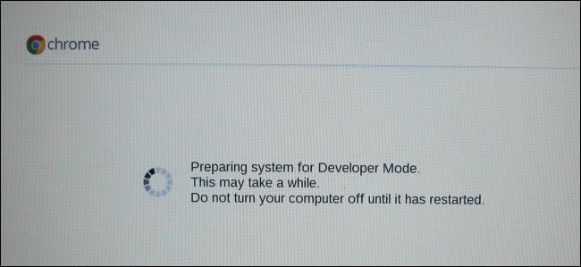
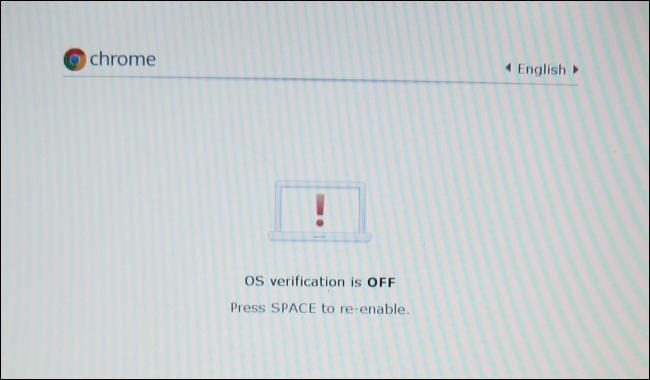
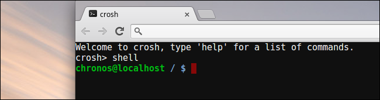
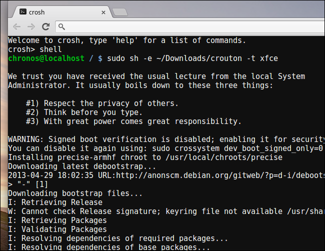
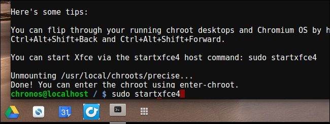

How-To Geek
How to Install Ubuntu Linux on Your Chromebook with Crouton

Chromebooks aren’t “just a browser” — they’re Linux laptops. You can easily install a full Linux desktop alongside Chrome OS and instantly switch between the two with a hotkey — no rebooting necessary.
We performed this process with the $249 Samsung Chromebook, also known as the Samsung Series 3 Chromebook. If you have another Chromebook, read on anyway — it’s the same process.
Crouton vs. ChrUbuntu
Installing Ubuntu Linux on your Chromebook isn’t as simple as installing the standard Ubuntu system — at least not at the moment. You’ll need to choose a project developed specially for your Chromebook. There are two popular options:
- ChrUbuntu: ChrUbuntu is a Ubuntu system built for Chromebooks. It works like a traditional dual-boot system. You can restart your Chromebook and choose between Chrome OS and Ubuntu at boot time. ChrUbuntu can be installed on your Chromebook’s internal storage or on a USB device or SD card.
- Crouton: Crouton actually uses a “chroot” environment to run both Chrome OS and Ubuntu at the same time. Ubuntu runs alongside Chrome OS, so you can switch between Chrome OS and your standard Linux desktop environment with a keyboard shortcut. This gives you the ability to take advantage of both environments without any rebooting needed. Crouton allows you to use Chrome OS while having a standard Linux environment with all its command-line tools and desktop applications a few keystrokes away.
We’ll be using Crouton for this. It takes advantage the Linux system underlying Chrome OS to run both environments at once and is a much slicker experience than traditional dual-booting. Crouton uses Chrome OS’s standard drivers for your Chromebook’s hardware, so you shouldn’t run into issues with your touchpad or other hardware. Crouton was actually created by Google employee Dave Schneider.
When you use Crouton, you’re actually just running one operating system — Linux. However, you’re running two environments on top of the OS — Chrome OS and a traditional Linux desktop.
Enabling Developer Mode
Before you do any sort of hacking, you’ll need to enable “Developer Mode” on your Chromebook. Chromebooks are normally locked down for security, only booting properly signed operating systems, checking them for tampering, and preventing users and applications from modifying the underlying OS. Developer Mode allows you to disable all these security features, giving you a laptop you can tweak and play with to your heart’s content.
After enabling Developer Mode, you’ll be able to access a Linux terminal from within Chrome OS and do whatever you like.
To enable developer mode on the Samsung Chromebook or Chromebook Pixel, hold down the ESC and Refresh keys and tap the Power button. You’ll enter recovery mode. Older Chromebooks have physical developer switches that you’ll need to toggle instead.
At the recovery screen, press Ctrl+D, agree to the prompt, and you’ll boot into developer mode.

When you transition to developer mode, your Chromebook’s local data will be erased (just like when you unlock a Nexus Android device). This process took about 15 minutes on our system.

Whenever you boot your Chromebook, you’ll see a warning screen. You’ll need to press Ctrl+D or wait 30 seconds to continue booting.
This warning screen exists to alert you that a Chromebook is in developer mode and the normal security precautions don’t apply. For example, if you were using someone else’s Chromebook, you could normally log in with your Google account without fear. If it was in developer mode, it’s possible that software running in the background could be recording your keystrokes and monitoring your usage. That’s why Google makes it easy to tell if a Chromebook is in Developer Mode and doesn’t allow you to permanently disable this warning screen.

Installing Crouton
First, you’ll need to download Crouton. Click the following link to download the latest release of Crouton to your Chromebook: http://goo.gl/fd3zc
Once you have Crouton downloaded, press Ctrl+Alt+T in Chrome OS to open the crosh terminal.
Type shell into the terminal and press Enter to enter Linux shell mode. This command only works if Developer Mode is enabled.

To install Crouton the easy way, all you need to do is run the command below. This installs Crouton with the Xfce desktop and an encrypted chroot for security.
sudo sh ~/Downloads/crouton -e -t xfce
The actual installation process will take some time as the appropriate software is downloaded and installed — it took about half an hour on our system — but the process is largely automatic.

If you’d rather install Ubuntu’s Unity desktop instead, use -t unity instead of -t xfce in the command above. You can run the following command to see a list of installation types, including installations without a graphical desktop:
sh -e ~/Downloads/crouton
After going through the installation process, you can run either of the following commands to enter your Crouton session (assuming you installed Crouton with Xfce):
sudo enter-chroot startxfce4
sudo startxfce4

Switching Between Environments
To go switch back and forth between Chrome OS and your Linux desktop environment, use the following keyboard shortcuts:
- ARM (like the Samsung Series 3 Chromebook): Ctrl+Alt+Shift+Back and Ctrl+Alt+Shift+Forward
- Intel x86/AMD64 (like the Chromebook Pixel and $200 Acer Chromebook): Ctrl+Alt+Back and Ctrl+Alt+Forward plus Ctrl+Alt+Refresh
If you want to exit the chroot, just log out of the Xfce desktop (or the Unity desktop, if you’re using that). You’ll then need to run the startxfce4 command above to enter the chroot again.
What You Can Do With Linux
You now have a traditional Linux desktop running alongside Chrome OS. All that traditional Linux software is just an apt-get away in Ubuntu’s software repositories. Graphical utilities like local image editors, text editors, office suites, development tools, all the Linux terminal utilities you would want — they’re all easy to isntall.
You can even easily share files between Chrome OS and your Linux system. Just use the Downloads directory in your home folder. All files in the Downloads directory appear in the Files app on Chrome OS.

On an ARM Chromebook like the Samsung Chromebook, you’re a bit limited in what you can do. Some programs don’t run on ARM, so you can’t run Minecraft and other closed-source applications that haven’t been compiled for ARM Linux. You have access to a variety of open source tools and desktop applications that can be recompiled for ARM, but most closed-source applications won’t work on ARM.
On an Intel Chromebook, you have much more freedom. You could install Steam for Linux, Minecraft, Dropbox, and all the typical applications that work on the Linux desktop, using them alongside Chrome OS. This means that you could install Steam for Linux on a Chromebook Pixel and gain access to a whole other ecosystem of games — if you were crazy enough to buy a Chromebook Pixel, of course.
One last tip if you’re using Xfce — you’ll probably want to disable the screensaver from the Screensaver tool in Xfce’s settings menu. It appears to cause graphical glitches in Chrome OS while running in the background.
Removing Crouton and Restoring Your Chromebook
If you decide you’re done with Linux, you can easily get rid of the scary boot screen and get your internal storage space back.
Just reboot your Chromebook normally to get back to the scary warning screen at boot-up. Follow the prompts on your screen (tap the Space bar and then press Enter) to disable Developer Mode. When you disable Developer Mode, your Chromebook will clean everything up, restoring you to a clean, safe locked-down Chrome OS system and overwriting all the changes you’ve made to your Chromebook’s software.
If you’re looking for more in-depth information on installing and setting up Crouton, be sure to check out Crouton’s readme.

![]()
![]()
![]()
![]()
![]()
![]()
![]()
![]()
![]()

Xubuntu would be perfect for one of these inexpensive netbooks.
Ubuntu,Xubuntu,Mint etc would give you better options and your privacy back. Good article.Thanks
It's worth noting that you can't just easily install any Linux on a Chromebook - at least, an ARM version. The Samsung Chromebook is a wonderful little device, inexpensive, light, and with solid battery life. But because it uses the ARM chip instead of Intel, you need a version of Linux that has been compiled for it.
I'm not familiar with using a chromebook, but is it possible to install a virtualbox type software or is it only a cloud based media?
Well, I suppose you could theoretically do it, but the problem is that with an ARM-based Chromebook, virtualization is going to be impractical and slow, even if you could manage to compile a virtualization platform to run on it.
Basically, it's not possible on an ARM-based Chromebook. For an Intel-based one, you could install Virtualbox.
The one show stopper for me going to a Chromebook is only being able to print using Google Cloud Print as I don't want to have to invest in a compatible printer. (I actually don't need to print - but another family member does.)
So, my question is this: When running Crouton on a Chromebook, would one be able to print to a regular USB connected printer?
As well, could one run stuff like libreoffice and gimp to effectively replace MS Office and Photoshop?
Thanks in advance for your response.
Anyone trying to do something more resource intensive such as this would also do well to enable swap on ChromeOS. Otherwise you tabs are discarded as memory gets used and those tabs have to be reloaded when you revisit them. ChromeOS was designed to run small memory-footprint tabs, not entire operating systems with apps under them. Enabling swap won't let give you any more memory, but it will make the system feel like it isn't choking under the load and SSD swapping is faster than HDD at least.
I also prefer to run in command-line mode with crouton (sudo enter-chroot) whenever possible.
Command to enable swap from command line, after hitting Ctrl-Alt-T:
swap enable 2000Note: I believe swap is now enabled by default in more recent ChromeOS versions, so you can disregard this post now.
I followed these instructions, but after I reboot and try to get in to the linux installation I get a page asking for a localhost login and it's not accepting the pw I set on installation. I am a total noob at this. Any assistance would be wonderful.
I had the same problem. When you set the password, it created a password file which failed to be written properly on shutdown. You need to clear the password file (and all user filestore) by resetting the chromebook out of developer mode. The next time you switch to developer mode the password file will be gone, and you can skip setting up the password when you follow the crouton setup.
Based on the instructions you need to Refresh (F3) after hitting forward (F2) to access the Ubuntu environment from the localhost screen assuming that you're using a Chrome device w/Intel.
Hi, first off I am new to linux. I just installed crouton today on my Samsung ARM Chromebook, and when ever i try to download anything using [sudo app-get install .......] i get the line [sudo app-get: command not found.] I have been looking around but I can't seem to find anything addressing this issue. any thoughts.
thankJosh
I installed Crouton on an Acer Chromebook. It sees the transceiver for my wireless mouse just fine and the mouse, though touchy, works fine. Unfortunately it does not see my MP3 player when I'm in Ubuntu which was my main motivation; I wanted to run Rhymthbox to be able to manipulate the MP3 player. The Ubuntu OS does not see my MP3 player at all. Any ideas? Thanks! JOhn
Typo. Use sudo apt-get install packagename - note that's ap**t**-get
This is amazing! And thanks for the clear instructions. After sudo apt-get install firefox, I now have a miniature version of my home office desktop machine running on a $250 Samsung chromebook. And I really like xfce compared to unity. I have found one bug, though. Scroll-wheel up works the same as scroll-wheel down. Very annoying, but not a show-stopper.
I have installed this fine, and have everything up and running, great tutorial! My question comes because I am using this as a torrenting device along with some other uses, I am just having trouble with the port forward. I have tried the automatic port forwarding, which says successful and then the port is still closed. I turned that off and tried manually and still have the same issue. I am a long time torrenter so I know how to port forward, and haven't ever ran into issues doing it.
My question is that with both methods failing, and the same ports working on other computers when trying them it leads me to believe that it has a default firewall. (Something like iptables or something) I just can't find it. So does anyone know if this install of crouton on xfce isntalls a default firewall, or if not how I can open the ports on the device?
Thanks in advance!
Well this is a first for me with chromebook and trying to install crouton. I followed the directions and still do not have success. It tells me the crouton file cannot be read. I have the full log if needed but I believe that to be the core of the issue. Any help with not being able to run files is very appreciated.
Hello: I have installed crouton on a Samsung 5 but when I use the key combo of ctrl-alt-arrow I get to a terminal window not to Ubuntu. Any suggestions? Thank you, Kate
I'm a newbie too and just trying to figure all this out. But after you reboot and see the localhost login prompt, you can type chronos and press the enter key. Then type sudo startxfce4 and press the enter key. That will bring up Ubuntu with the xfce interface.
Thanks for the article on how to install Ubuntu on the Chromebook. I just followed the steps and installed Ubuntu 12.04 with xfce on my Acer C7 Chromebook. But now I've noticed that this version of xfce has a lot of applications missing that I've seen in some reviews of xfce. For example, the Ubuntu Software Center is missing. So how do I add or access the Software Center? Also, I saw some other tips that said that I could click on the Dash Home and then start the Update Manager to upgrade Ubuntu. But there is no Dash Home and I haven't found an Update Manager. Being a total newbie to Linux, how would I upgrade to a more recent version of Ubuntu like 12.10 or 13.04? Please be specific and don't assume that I know more than a newbie. THANKS!!
By the way, these are some commands I've tried from the prompt and the error messages I received:sudo do-release-upgradeCommand not foundupdate-manager -dCommand not foundsudo sh -e ~Downloads/crouton -t xfce -uCan't open Downloads/croutonsudo apt-get install software-centerCommand not foundsoftware-centerCommand not foundI also used the Chrome browser to go to apps.ubuntu.com and clicked the Software Center download button to download Filezilla and got the message: Error: Failed to open URI "apt://filezilla" The specified location is not supported
Is it possible with this instruction to install any Ubuntu release on an Intel device like the C7?
TIA / Kent
I'd like to share my experience in installing crouton on a samsung 303c12. This article is accurate in all its details in my experience. But I feel that it should really empasize that this does not result in a system that is easy to use for the average computer user. Especially regarding the choice of xfce, it needs to be emphasized that this is a very rudimentary system with ancient looking drop down menus and a heavy reliance on code and the terminal to make anything work.
Even in the case of installing Unity, you still need to install Software Center to get started installing software. Once that is up however, Thunderbird, Firefox and LibreOffice all installed for me easily.
I had trouble installing Ubuntu Restricted Extras. The ttf-mscorefonts-installation generates errors the next time you start up Ubuntu. I eventually figured out how to uninstall that. If you're happy using Chrome OS for your media (mp3, video, flash) then Ubuntu seems to be just fine.
UPDATE: After reinstalling Unity and installing USC, Thunderbird, Firefox and LibreOffice, it refuses to load Unity on restart. Instead I get a message: Could not update ICE authority file.
Avoid Ubuntu. Unity is a piece of crap BUT Ubuntu derivatives are a good way of getting all the benefits of Ubuntu without the crap of Unity.
Linux Mint, Xubuntu, Linux Mint KDE, Lubuntu, PeppermintOS, ZorinOS...all of these are good options.
I'm considering buying the new Acer Chromebook C720. I would like to be able to use Magicjack with it when traveling but Magicjack will not work with Chrome and it is very difficult to get it to work with Linux. After installing Crouton, would it be possible to load VMWare Player or a similar program and create a virtual Windows XP OS? I have XP disks left over from an old desktop, so I will have a legal version to load.
If I do manage to get XP to run on the Acer, is there anything else that would prevent me from using Magicjack?
Thanks for the great instructions! It worked flawlessly on my HP Chromebook 14. I figured, what the hey.I added VLC right away as well as the packages to help it run well. Works like a charm. I used the Synaptic Package Manger, which made it pretty easy. (The terminal works good, too, and isn't too intimidating for a newb, since plenty of instructions are online.) I'm looking forward to the added options having Crouton brings. Again, thanks!
No need to buy a special google cloud printer. Follow these instructions. (you will need a windows/mac/linux machine configured for your classic printer for initial setup)https://support.google.com/cloudprint/answer/1686197?hl=en